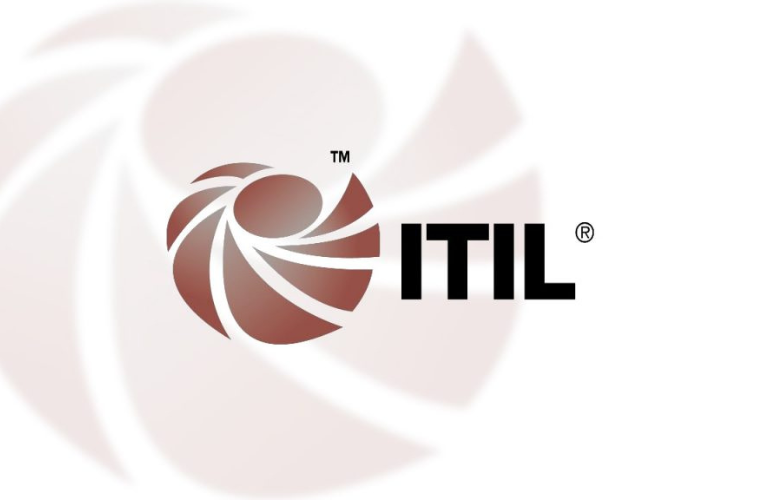
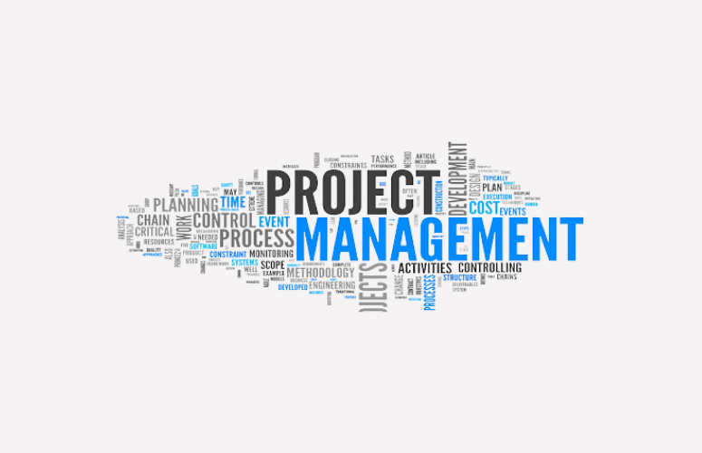

DevOps is a set of practices that automates the processes between software development and IT teams, in order that they can build, test, and release software faster and more reliably. The concept of DevOps is founded on building a culture of collaboration between teams that historically functioned in relative siloes.
This course provides a comprehensive overview of DevOps practices, models and techniques, along with coverage of DevOps benefits, challenges and business and technology drivers. Also explained is how DevOps compares to traditional solution development and release approaches and how the application of DevOps can be monitored and measured for concrete business value.
| Related Course | |
|---|---|
|  ITIL Service Management |  Project Management Professional (PMP)® Certification |
Ojo Contact148, Olojo Drive High Taste B/Stop, EIIT/FCMB Building, Ojo, Lagos State. |
Satelite Town ContactNo 1 Community Road Abulado Satelite Town, Lagos State. |
Lekki ContactNo 9, Otunba Adedoyin Ogungbe Crescent, Opposite ELIM Motors LekkiPhase 1, Lagos State. |